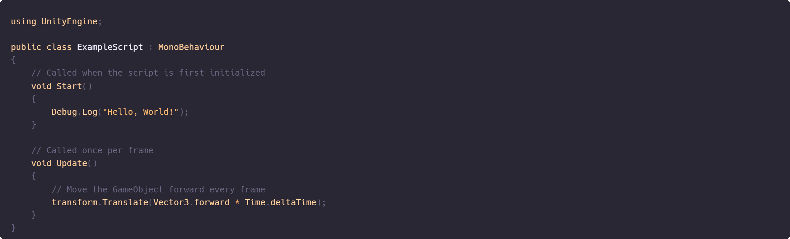

In C#, particularly within the Unity game engine, MonoBehaviour is a base class from which all scripts derive
when attached to GameObjects. It allows scripts to interact with Unity's core functionality, such as lifecycle
methods, physics, rendering, and more.
Key Features of MonoBehaviour:
1. Lifecycle Methods: Unity provides a set of special methods that can be overridden in a MonoBehaviour
script to control its behavior at specific points in the game loop. Examples include:
- Awake(): Called when the script instance is being loaded.
- Start(): Called before the first frame update.
- Update(): Called once per frame.
- FixedUpdate(): Called at fixed time intervals, typically for physics updates.
- LateUpdate(): Called once per frame after Update (useful for camera movement or final adjustments).
- OnDestroy(): Called when the GameObject or script is destroyed.
2. Attachable to GameObjects:
- Scripts that derive from MonoBehaviour can be attached to GameObjects in Unity's Scene Hierarchy.
- This allows your custom code to interact with GameObjects and components in the Unity scene.
3. Unity-Specific Features:
- Coroutines: Using StartCoroutine allows you to run code over time (like animations, delays, or timers).
- Input Handling: You can check for user inputs directly in the Update method.
- Physics Interactions: Unity provides event functions like OnCollisionEnter and OnTriggerEnter.
4. Access to GameObject and Components:
- A MonoBehaviour script has direct access to its attached GameObject through the gameObject and transform properties.
- You can manipulate the GameObject's position, rotation, and components dynamically.
Example of MonoBehaviour in a Unity Script:

Explanation of the Script:
- Start(): Executes once when the GameObject the script is attached to is enabled in the scene.
- Update(): Executes every frame. Here, it moves the GameObject forward.
Summary:
- MonoBehaviour is the base class for scripts in Unity.
- It enables access to Unity's lifecycle methods (like Start() and Update()).
- It allows scripts to be attached to GameObjects to interact with Unity's systems.
- By deriving from MonoBehaviour, your script becomes a powerful tool to create behavior and control in your Unity scenes.